Human migration patterns shape hepatitis B diversity
Barney Isaksen Potter
KU Leuven
2022-12-21
Life Sciences Center, Vilnius University

Source: CDC/ Dr. Erskine Palmer
Source: Morens & Fauci (2020)

Source: Kocher et al. (2021), Science.
 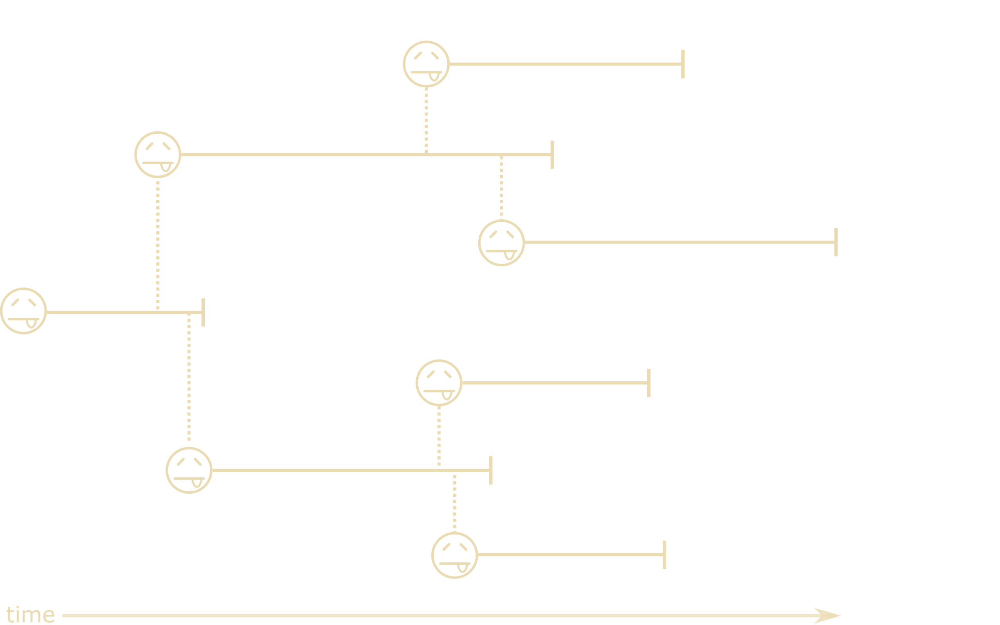
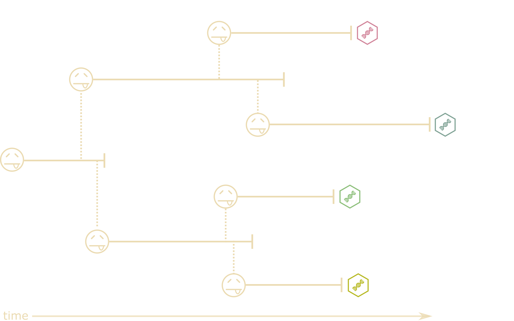
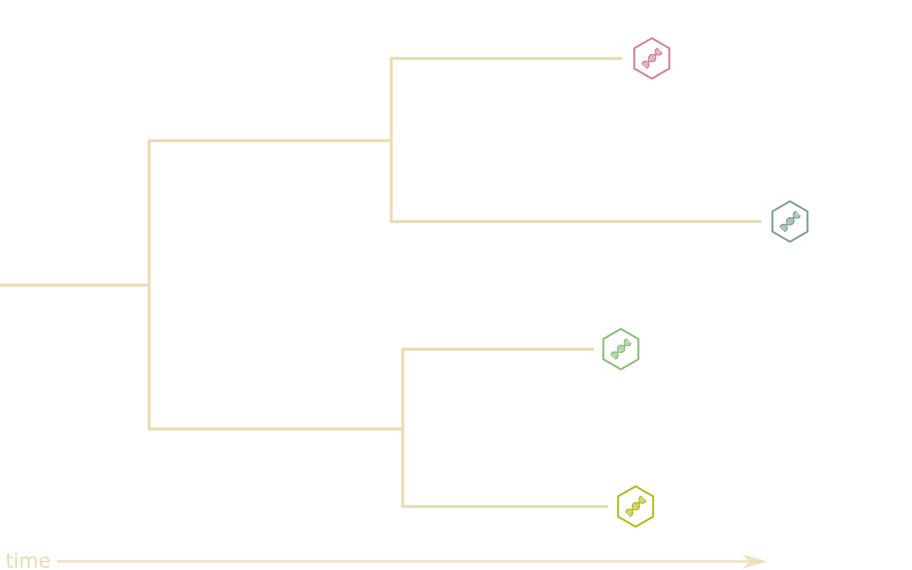
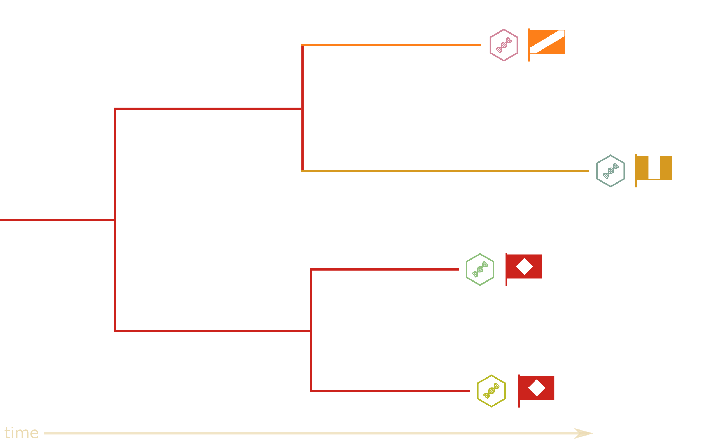
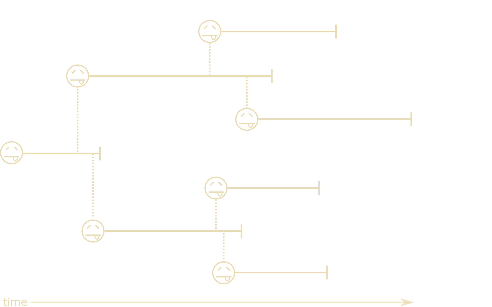
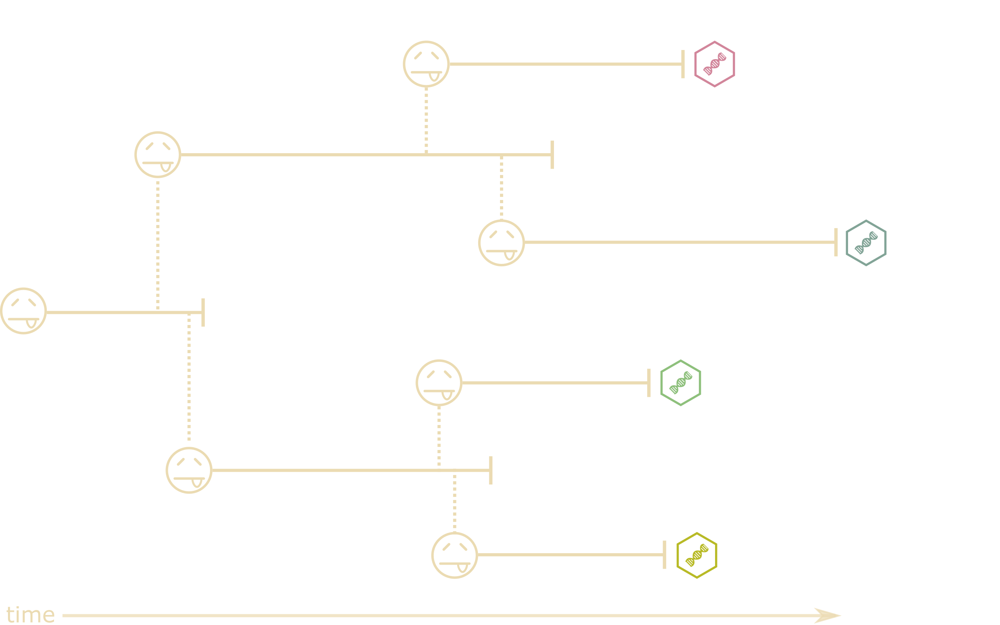
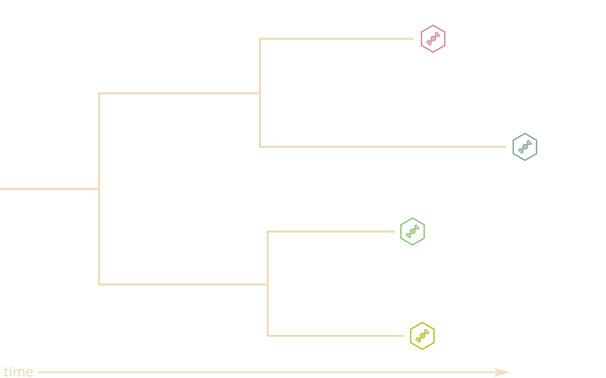
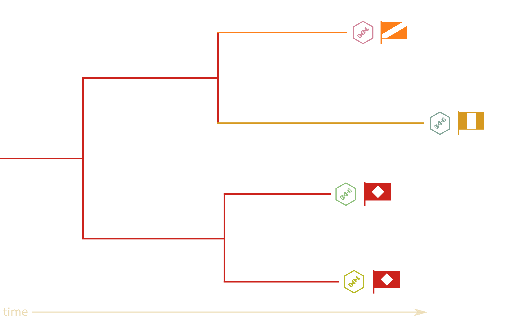
What can phylogenetics tell us?
- Phylogeny
- Evolutionary rate
- Substitution rates
- Demographic parameters
- Migration rates
- Migration history

What can phylogenetics tell us?
- Phylogeny
- Evolutionary rate
- Substitution rates
- Demographic parameters
- Migration rates
- Migration history
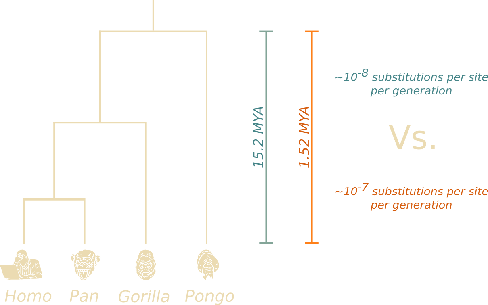
What can phylogenetics tell us?
- Phylogeny
- Evolutionary rate
- Substitution rates
- Demographic parameters
- Migration rates
- Migration history
\[\tiny
Q_{JC69} =
\begin{bmatrix}
\cdot & \lambda & \lambda & \lambda \\
\lambda & \cdot & \lambda & \lambda \\
\lambda & \lambda & \cdot & \lambda \\
\lambda & \lambda & \lambda & \cdot \\
\end{bmatrix} \\[1em]
Q_{GTR} =
\begin{bmatrix}
\cdot & a\pi_C & b\pi_A & c\pi_G \\
a\pi_T & \cdot & d\pi_A & e\pi_G \\
b\pi_T & d\pi_C & \cdot & f\pi_G \\
c\pi_T & e\pi_C & f\pi_A & \cdot \\
\end{bmatrix}
\]
What can phylogenetics tell us?
- Phylogeny
- Evolutionary rate
- Substitution rates
- Demographic parameters
- Migration rates
- Migration history
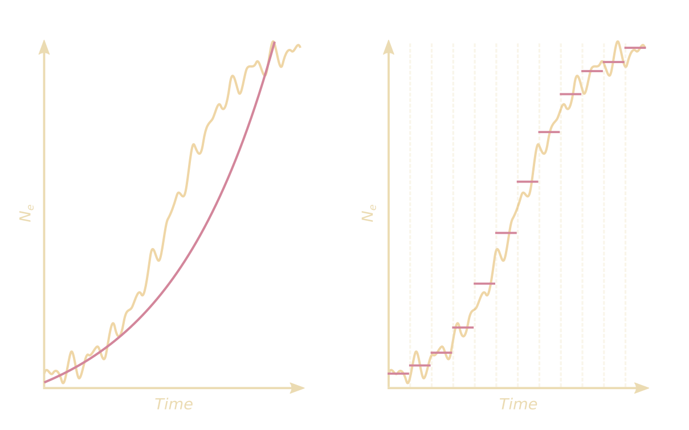
What can phylogenetics tell us?
- Phylogeny
- Evolutionary rate
- Substitution rates
- Demographic parameters
- Migration rates
- Migration history
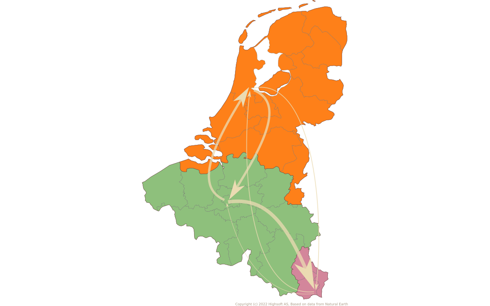
What can phylogenetics tell us?
- Phylogeny
- Evolutionary rate
- Substitution rates
- Demographic parameters
- Migration rates
- Migration history
KU/UZ Leuven
- Guy Baele
- Piet Maes
- Simon Dellicour
- Lize Cuypers
- Emmanuel André
- Samuel Hong
- Nena Bollen
GIGA Research Institute
- Keith Durkin
Fred Hutch
- Trevor Bedford
- John Huddleston
- Tom Sibley
University of Basel
- Richard Neher
University of Bern
- Emma Hodcroft